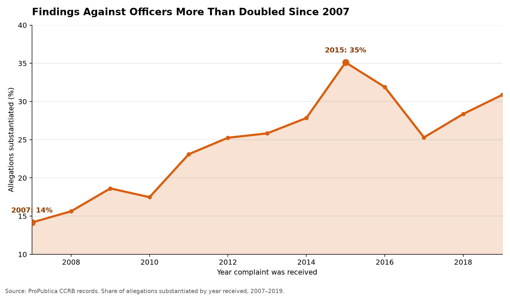

Proposition: The NYPD’s civilian complaint system holds officers accountable.
FOR the Proposition

Design Decisions and Rationale:
- RATIONALE_1
- RATIONALE_2
- RATIONALE_3
AGAINST the Proposition

Design Decisions and Rationale:
-
Decision 1: Grouping "Exonerated," "Unfounded," and "Unsubstantiated" into a Single Monolithic Baseline
- Deception Score: -1.0 (Moderately Deceptive)
- Rationale: I collapsed distinctly different legal and investigative outcomes ("Exonerated" meaning the act occurred but was lawful, "Unfounded" meaning the act did not occur, and "Unsubstantiated" meaning evidence was insufficient) into a single overarching gray bar labeled "Exonerated, Unfounded, or Unsubstantiated". This persuades the viewer that all non-substantiated cases represent a failure to hold officers accountable, erasing administrative nuances where officers legitimately followed protocol. Showing the full multi-category breakdown was considered, but it diluted the visual impact by splitting the non-accountability segment across three smaller bars; grouping them created a massive gray baseline reaching up to 91.2%, making systemic impunity appear virtually universal.
-
Decision 2: Temporal Bounding to the 2000–2009 Window
- Deception Score: -0.5 (Slightly Deceptive)
- Rationale: I filtered the dataset strictly to complaints received between 2000 and 2009 rather than displaying the complete 1985–2020 record. This decision makes the graphic significantly more persuasive for the anti-proposition side because the Force substantiation rate plunges from the multi-decade average of 12.8% down to 8.8%, emphasizing systemic failure during a pivotal decade of aggressive policing. Leaving the entire timeline unconstrained was considered, but the broader dataset included decades with higher overall substantiation figures that blunted the critique; bounding to 2000–2009 produced an empirical minimum while remaining factually defensible under the subtitle.
-
Decision 3: Asymmetric Color Hierarchy and Saliency Encoding
- Deception Score: 0.5 (Slightly Earnest)
- Rationale: I mapped the "Substantiated" outcome to an alert, saturated crimson red while encoding the non-substantiated outcomes in a muted, desaturated light gray. This visually prioritizes the red bars as the primary object of scrutiny, naturally directing the viewer's eye to how small they are relative to the expansive gray mass. Using a standard neutral categorical palette (such as blue versus orange) was tested, but it treated both outcomes as equally normative; the red-versus-gray contrast immediately frames substantiation as the missing, deficient element of the disciplinary system.
-
Decision 4: Normative Framing in Title and Subtitle Typography
- Deception Score: -1.0 (Moderately Deceptive)
- Rationale: Rather than using a descriptive label (such as "Distribution of Allegation Outcomes by FADO Category"), I framed the chart with an editorialized headline in dark red: "Where Complaints Matter Most, Findings Are Rarest: Force Allegations Expose a System Lacking Accountability". This instructs the viewer how to interpret the data before they read the numerical values, defining a low substantiation rate as proof of broken accountability rather than a reflection of unproven or baseless complaints. A neutral title was considered, but it failed to satisfy the persuasive stance required by the anti-proposition deliverable.
Final Reflection
[WRITE FINAL REFLECTION PARAGRAPHS HERE.]